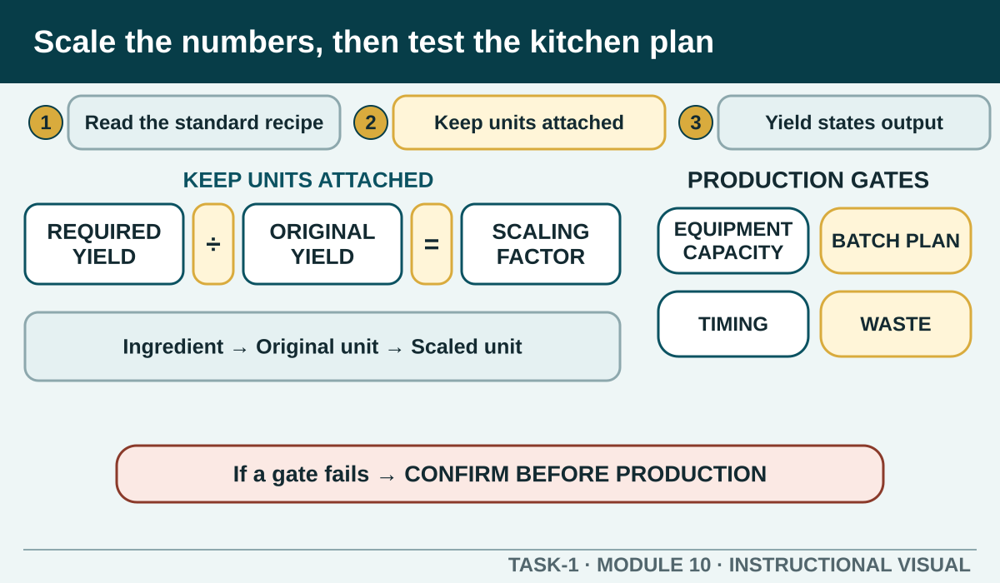

Prior learning
Recall the previous lesson and bring forward one question or completed learning artefact.
Task 1 · Lesson 10 of 16
Read a standard recipe as a production specification, interpret units and yield, calculate authorised quantity changes and test whether the result remains workable and safe.
Prior learning
Recall the previous lesson and bring forward one question or completed learning artefact.
Success criteria
Learning boundary
This lesson supports preparation and formative practice. The current authorised package and trainer/assessor control formal products, observations, dates and submission.
A standard recipe is more than a list of ingredients. It identifies the product, expected yield, quantities and units, equipment, method, portion and presentation. It may also contain preparation terms, service, storage, allergen or quality information that affects the whole plan.
Read from title to final instruction before measuring anything. Mark unfamiliar terms and confirm them with the teacher. Use the current authorised recipe for practical work; this module does not replace it with an invented product.
An amount is incomplete without its unit. Mass, volume, count and package measures are not automatically interchangeable, and abbreviations must be read carefully. Select the measuring equipment suited to the ingredient and level of accuracy required by the recipe.
Record calculations with units at every step. A bare number makes it difficult to detect whether an answer represents grams, millilitres, items or portions. Sense-check the result against the original recipe before collecting stock.
Recipe yield may describe portions, items, volume or another finished amount. Compare the recipe yield with the quantity required for the teacher-authorised task. If they match, no scaling is needed; if they differ, calculate a scaling factor using the approved method.
The basic relationship is required yield divided by original yield. Apply the same factor to each scalable ingredient, keep units visible and check the arithmetic. The calculation should then be reviewed for real production effects.
A larger or smaller yield may change equipment capacity, batch size, preparation space, timing and service sequence. Some ingredients or processes may require special handling rather than a simple mathematical adjustment. Follow the authorised recipe and seek teacher confirmation where the scaled process is unclear.
Do not alter one ingredient independently because the product looks too small. Preserve the recipe relationship unless an authorised instruction states otherwise. Round only as directed and explain any practical measurement limit.
Identify actions that must occur before others: equipment preheating only when directed, ingredient preparation, assembly, cooking, cooling, holding or presentation. Mark tasks that can run together and those that require the same item of equipment or work zone.
Add hygiene, separation, monitoring, communication and clean-down steps that support the written method. This turns the recipe into a realistic production plan rather than a copied paragraph.
Accurate yield planning supports food orders, stock use, portion consistency and waste prevention. Check available stock against the authorised quantity before opening or preparing packages. Report shortages, damaged items or unexpected yield rather than quietly changing the product.
After production, compare planned and actual output where directed. Record the real result and identify whether calculation, preparation loss, portioning or another factor affected it. Do not change the planned yield record to match what happened.
Phone view: swipe across the diagram, or use Open larger below.

Formative practice
Each option explains the workplace consequence. These responses save on this device.
Written application
Use observable facts, explain the consequence and keep local assessment or procedure details with the authorised source.
Self-checkApply and keep evidence
Build a complete product workflow from a supplied neutral brief.
Use the check result, activity record and written response as formative learning evidence only. Formal evidence remains controlled by the current package and trainer/assessor.
Next: Mise en place.
Authorised source note: Source basis: authorised Cycle 1 recipe elements, quantities and yield learning. The current recipe, rounding rules, equipment capacity, batch method and acceptable product yield remain Teacher to confirm.